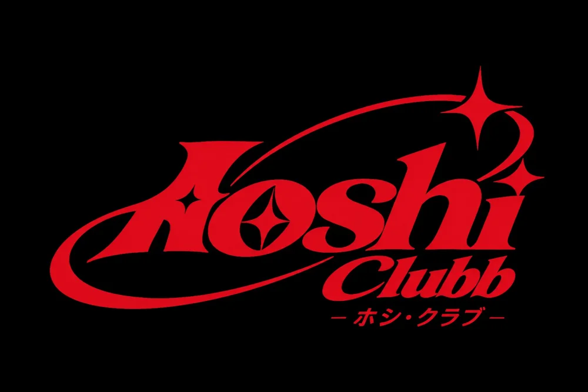

Noticias, conciertos, lanzamientos y merch de la música urbana.
Ver las últimas noticiasConocer a los artistasNoticias
Giras, estrenos y cambios de fecha de los artistas que seguimos.
Artistas
Quiénes forman parte de Hoshi Clubb, de Puerto Rico, México, Colombia y España.
Conciertos
Fecha, ciudad, recinto y estatus de cada show.
Lanzamientos
Álbumes, EP y sencillos de 2026.
Merch
Productos oficiales con su precio y enlace de compra.
Contacto
Hoshi Clubb es un sitio de noticias y entretenimiento sobre música urbana. “Hoshi” significa “estrella” en japonés: aquí los artistas y su música son las estrellas.
¿Tienes una noticia, una fecha de concierto o un lanzamiento que debamos publicar? Compártelo con hoshiclubb@gmail.com, responsable del proyecto.(número 8116864864)